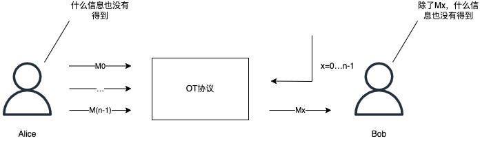

背景
“不经意传输”要解决这类问题：你需要给对方多条信息，但是你又必须确保对方只获得其中一条，但是对方又希望能够确保你不知道他看到哪一条信息。
设计一个具体场景：你给你的哥们介绍相亲女朋友，你有两个可供介绍的单身女性，但是你不想同时将两人的情况和联系方式给对方。但你也无法抉择到底给哪个，所以你想让他随机抽签选择一个。但与此同时，你的哥们也不想让你知道，他最终抽到了谁。
定义
不经意传输（Oblivious Transfer，简称OT）是一个密码学协议，在这个协议中，消息发送者从一些待发送的消息中发送一条给接收者，但事后对发送了哪一条消息仍然oblivious（不知道），这个协议也叫茫然传输协议。
不经意传输是密码学中的一个基本而重要的问题，被认为是该领域的关键问题之一，对于安全多方计算来说是完整的实现。
例如下图，Alice是消息发送者，Bob是消息接受者。Alice想要将消息$M_0$、$M_1$之一传给Bob，Bob只能得到自己想要的那个（$M_0$或$M_1$）不能获取另外一个消息，Alice也不能知道Bob选的是哪一条消息。
历史
第一种形式的不经意传输，最初是在1981由Michael O.Rabin提出，在这种不经意传输中，发送者Alice发送一条消息给接收着Bob，而Bob以1/2的概率接收到信息，在结束后Alice并不知道Bob是否接收到了信息，而Bob能确信地知道自己是否收到了信息。
另一种更实用的不经意传输协议，被称为2选一不经意传输（1 out 2 oblivious transfer）由 Shimon Even，Oded Goldreich和Abraham Lempel在1985年提出，在这种形式的不经意传输模型中，Alice每次发两条信息（m1、m2）给Bob，Bob提供一个输入，并根据输入获得输出信息，在协议结束后，Bob得到了自己想要的那条信息（m1或者m2），而Alice并不知道Bob最终得到的是哪条。
这个输入，我的理解是通知发送者发哪些消息，发送消息的范围
1986年，Brassard等人将2选1不经意传输拓展为n选1。

不经意传输一种实现方式是基于RSA公钥算法，下面就2选1不经意传输的实现做简要介绍。
基于RSA公钥算法的2选1不经意传输
先把「基于RSA公钥算法的2选1不经意传输」的流程图列出来：
流程
- 发送者Alice生成两对RSA公私钥$(puk0, pri0)$，$(puk1, pri1)$，并将两个公钥$puk0$和$puk1$发送给Bob。
- Bob生成一个随机数$r$，并用收到的两个公钥之一加密随机数，$c=Encrypt(r)$。（用哪个秘钥取决于想获取哪条数据，例如如果想要得到消息$M_0$就用$puk0$加密随机数，如果想要得到$M_1$就用$puk1$加密随机数），并将密文结果发送给Alice。
- Alice用自己的两个私钥分别解密收到随机数密文，得到两个解密结果：$k_0=Decrypt(c, pri_0)$，$k_1=Decrypt(c, pri_1)$。（$k_0$，$k_1$其中一个就是随机数$r$）。并将两个结果分别与两条信息进行异或，生成掩码消息：$e_0=k_0\bigoplus m_0$，$e_1=k_1\bigoplus m_1$，并将两个结果$e_0$，$e_1$发给Bob。
- Bob用之前生成的随机数$r$与收到的$e_0$，$e_1$分别做异或操作，得到的两个结果中只有一条为真实数据，另外一条为随机数：$m^{‘}_0=e_0\bigoplus r$，$m^{‘}_1=e_1\bigoplus r$。
- Bob在步骤2中，如果使用$puk0$加密，得到的$m^{‘}_0=m_0$，反之是$m_1$。
分析
在此过程中第3步最为关键，如果Alice无法从用两条私钥解密得到的结果$k_0$、$k_1$中区分出Bob的真实随机数，则能保证Alice无法得知Bob将要获取的是哪条数据。Bob没有私钥也就无法得出真实的私钥解密结果（如果$k_0$为真实随机数，Bob无法得知$k_1$的值），所以也就只能得到自己想要的那条数据而无法得到另外一条，保障协议能执行成功。